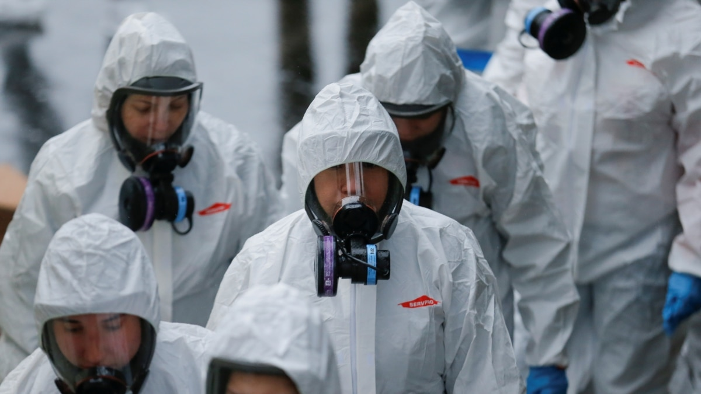

«Биологическое оружие» или «уничтожение пенсионеров»?Теории заговора вокруг коронавируса
В связи с распространением коронавируса COVID-19 и признанием его пандемией – то есть эпидемией, распространившейся по всему миру, – правительства многих стран ввели режим чрезвычайного положения, карантины и другие экстренные меры.Закрыты границы, отменено авиасообщение, прекратили свою работу кафе и рестораны.Пока ученые ищут вакцину и разрабатывают новые методы лечения, аналитики считают потенциальные убытки.Пандемия сильно ударила по бизнесу, как крупному (авиа- и грузоперевозки, гостинично-ресторанный комплекс), так и по мелкому (торговля, сфера услуг).
А пользователи соцсетей распространяют не только последние новости и инструкции по тому, как правильно мыть руки и шить маски.'Американцы вовсю испытывают вирусы, у них полный арсенал биологического оружия'.'Вирус отлично помогает Путину'.'Это инструмент для уничтожения старого населения, чтобы пенсии не платить'.'Китай знал о вирусе, но врал'.'Директор ВОЗ связан с коммунистами – и он же объявил пандемию'.Множество этих и подобных комментариев в соцсетях и на различных сайтах по всему миру сводится к тому, что вирус и его широкое распространение – якобы искусственные процессы и за ними кто-то стоит.Что коронавирус распространили намеренно, преследуя конкретную цель.
Подобные попытки объяснить сложное общественное событие не естественными причинами или совокупностью разных факторов, а злым умыслом всемогущих тайных сил обычно называют 'конспирологией'.С английского 'conspiracy' переводится как 'заговор'.Теорий заговоров много, есть довольно живучие: убеждение, что миром правят Ротшильды; вера во всемогущество масонов; в еврейский заговор и тому подобное.Теории заговоров бывают глобальные ('про мировую закулису') и локальные (например, теория о том, что теракт 11 сентября 2001 года устроили сами американцы).
Согласно классификации американского религиоведа и политолога Майкла Баркуна, есть три типа теорий заговоров.Событийные, как и следует из их названия, рассматривают какое-то событие: убийство Кеннеди, теракт 11 сентября, высадка американцев на Луну.Есть теории систематические: заговоры масонов, мировой закулисы, евреев, коммунистов, фармацевтов.И, наконец, сложные теории заговоров, где последние выстраиваются в иерархию и одна теория подтверждает и объясняет некоторые факты другой теорией.
Среди известных теорий заговора, связанных с медициной, – вера в то, что вакцинация изобретена, чтобы вызывать у детей аутизм.Приверженцы этой теории призывают отказываться от прививок.А возникла она так.В конце прошлого столетия была разработана комплексная вакцина против кори, паротита и краснухи (КПК).Однако в 1997 году в научном журнале The Lancet появилась статья врача из Великобритании Эндрю Уэйкфилда с клиническими данными о том, что у детей после вакцинации может развиваться аутизм.В самой работе Уэйкфилда говорилось лишь о предположении возможного развития, а также делалась оговорка, что имеющихся данных недостаточно для точного вывода.Однако на оговорки никто не обратил внимания.Данные подхватили СМИ, с которыми Уэйкфилд охотно общался.В результате уровень вакцинации КПК в Великобритании в начале 2000-х упал на 80%.
Как выяснилось позже, сам врач Уэйкфилд ранее подал заявку на патент на альтернативную, якобы более качественную вакцину.Кроме того, у него был заключен контракт с юридическими компаниями, которые занимались возмещением ущерба тем, кто воспользовался КПК: родители, которые поверили в его заявления по вреду вакцины, по рекомендации юристов приводили своих детей лечиться к нему, что дало возможность врачу тестировать свою вакцину (антипрививочником он сам не был, просто выступал против комбинированного препарата).
Когда эти подробности вскрылись, Уэйкфилда лишили лицензии и запретили заниматься врачебной деятельностью.После его исследования ученые из разных стран мира провели десятки аналогичных – с участием сотен тысяч детей – и не нашли научного подтверждения связи между КПК-вакциной и аутизмом.

Загрузить
Анализируя теории заговора, ученые пришли к выводу, что следует обращать внимание не на веру в один конкретный сговор, а на сам тип конспирологического мышления.Если человек верит в одну какую-то теорию заговора, то высока вероятность, что он будет верить и в другие.
В основе конспирологии лежит принцип телеологии.Это философское предположение, которое обозначает, что в каждом процессе или действии есть некая цель.Проще говоря, что любое событие происходит с определенной целью и что 'просто так' ничего не случается.
Философы и психологи выделяют несколько причин, из-за которых люди верят в заговоры.
Во-первых, эволюционные особенности познания.Человек – существо разумное, а потому пытается понять причины происходящих вокруг него событий.Чтобы выжить как биологическому виду, нам нужно было выстраивать логические объяснения и выявлять потенциальную опасность.Неопределенность пугает, поскольку не дает возможности предугадать последующие действия.Грубо говоря, всегда лучше установить, что привело к тому или иному результату, чтобы в дальнейшем этот процесс контролировать.И не важно, правильно ли установлены причинно-следственные связи, – психологический комфорт достигнут.Человек думает, что разобрался с причинами.
К примеру, первобытный человек не знал, откуда появляется молния.Он придумывает богов либо духов и пытается их 'задобрить'.Он успокаивается от того, что 'понимает' механизм формирования молнии, а также понимает, как этим механизмом можно управлять.На этом этапе развития человечества еще невозможно четко разграничить веру, религию или конспирологию.
С течением времени, когда уровень накопленных знаний увеличивается и физические процессы и явления постепенно объясняются наукой, конспирологический тип мышления не исчезает – он просто переносится с естественнонаучной на политическую и общественную сферы.
Во-вторых, конспирология присуща тем, кто не ощущает, что способен влиять на изменения в своей жизни.К таким выводам пришли в 1999 году американские ученые, которые пытались выяснить, действительно ли афроамериканцы имеют некую 'предрасположенность' к конспирологии.В ходе исследования они выяснили, что в теории заговора люди верят не из-за предрасположенности.Те афроамериканцы, которые считали, что могут контролировать политику и влиять на принятие решений, меньше верили в теории заговора.(Детально об этом см.исследование Parsons S., Simmons W., Shinhoster F., Kilburn J. A test of the grapevine: An empirical examination of conspiracy theories among African Americans // Sociological Spectrum.1999.№ 19 (2).P.201-222).Те же, кто склонен мыслить, что от них ничего не зависит и только правительство или политики решают, как жить обществу, легко поддаются воздействию конспирологии.При таком стиле мышления легко и органично формируется идея о том, что 'мы плохо живем, потому что кому-то это выгодно, кто-то на этом наживается'.Такие объяснения являются более понятными и легче воспринимаются, чем сложные объяснения реальных экономических механизмов.
И третье – теории заговоров будут популярны там, где нет доверия между индивидами и нет доверия к органам власти.Это выяснил и научно обосновал в 1992 году профессор Ратгерского университета в Нью-Джерси Тед Герцель.Он опросил несколько сотен случайных людей и узнал их мнение по поводу известных на то время теорий заговоров.Кроме того, он выяснял насколько опрошенные им люди доверяют друзьям, соседям и властям.Результаты показали, что те, кто меньше доверяет окружающим, больше склонны к конспирологии.(Подробнее см.Goertzel T.Belief in conspiracy theories // Political Psychology.1994.№ 15 (4).Р.731-742).Позже теорию Гецеля подтвердили и другие исследователи (Darwin H., Neave N., Holmes J.Belief in conspiracy theories.The role of paranormal belief, paranoid ideation and schizotypy // Personality and Individual Differences.2011.№ 50 (8).P.1289-1293).
Теорию заговора довольно легко отличить от аналитической версии событий.Во-первых, теории заговора всегда выступают в роли альтернативных моделей объяснения и всегда противоречат официальным версиям.
Загрузить
Конспирологические теории всегда более детальны, в них каждый элемент встроен в общую картину.Когда читаешь теорию заговора, невольно приходит мысль: 'Как же все продумано, прямо до мелочей'.Официальные версии могут опускать детали, но теории заговоров всегда очень внимательны к нюансам.
Конспирологическая версия всегда целостна, ею можно объяснить любой факт, она в принципе неопровержима.В этом ее отличие от научной теории.Научная теория всегда может быть опровергнута, а теория сговора – нет.
Для конспирологии свойственна специфическая лексика: например, употребление словосочетаний 'тайное правительство', 'транснациональные корпорации', 'мировая закулиса' и глаголов 'обманывают', 'скрывают', 'утаивают'.
Если какое-то объяснение общественного явления одновременно:
– с большой вероятностью, перед вами классическая теория заговора.
На постсоветском пространстве теории заговоров находят почву не только из-за упомянутого недоверия властям и складывающегося у людей ощущения, что они не могут влиять на собственную жизнь, но и из-за определенных исторических факторов.В советское время руководство страны и компартии объясняло многие факторы – от необходимости репрессий до экономических провалов – происками врагов советской власти, шпионов и капиталистов.
Исследования теорий заговоров – популярное направление в научном мире.Ученые разбирают мифы вокруг теракта 9/11, высадки американцев на Луну или же убийства Усамы бен Ладена.Одна из сравнительно недавно вышедших на эту тему на русском языке работ – книга психолога Роба Бразертона 'Недоверчивые умы.Чем нас привлекают теории заговоров', вышедшая в России при поддержке просветительского фонда 'Эволюция'.Автор анализирует различные виды теорий заговоров, выясняет причины их возникновения, опираясь при этом на многочисленные социологические, психологические и религиоведческие исследования.
Posted On: 2020-03-19T05:30:00
Posted By: Дмитрий Горевой
Content Date: 2020-03-19
Download Date: 2021-05-30
Document ID: L0C04CMQR